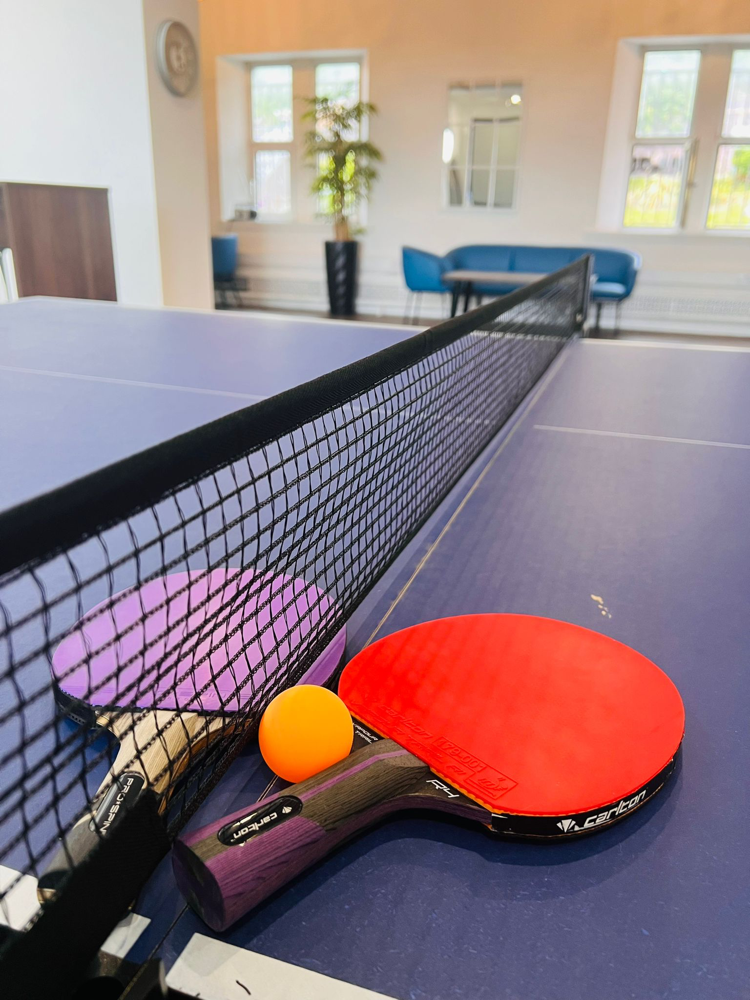
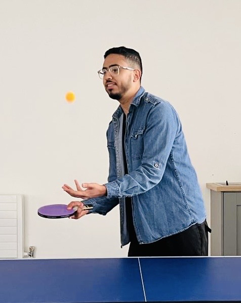
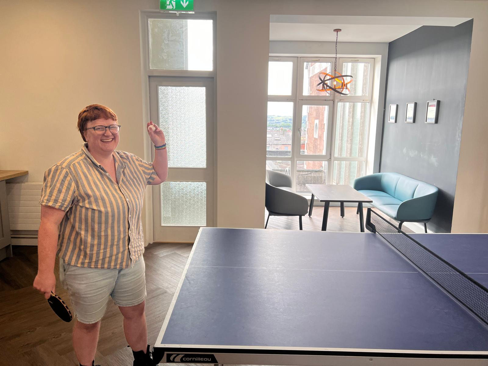
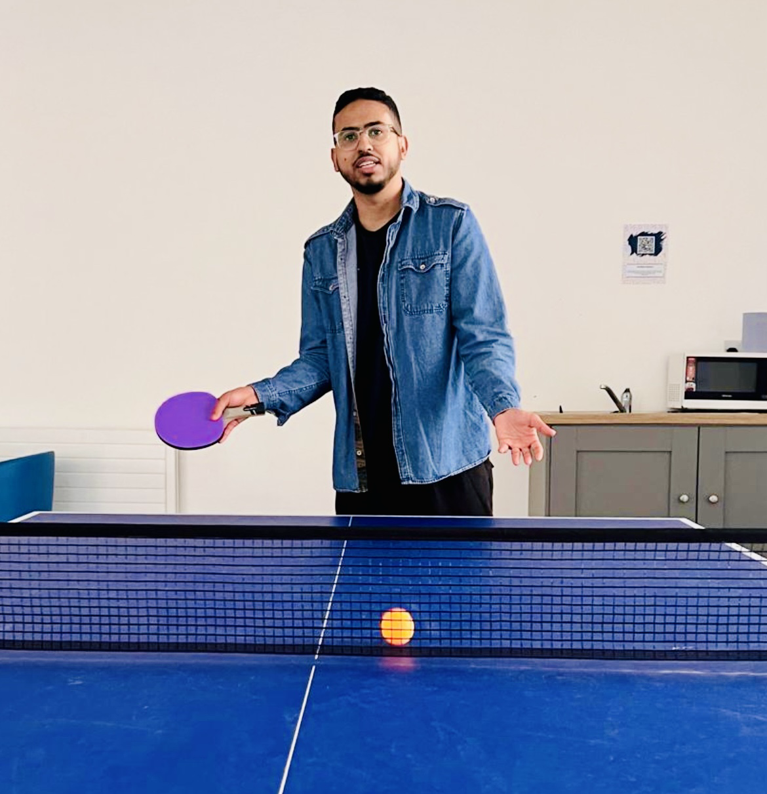
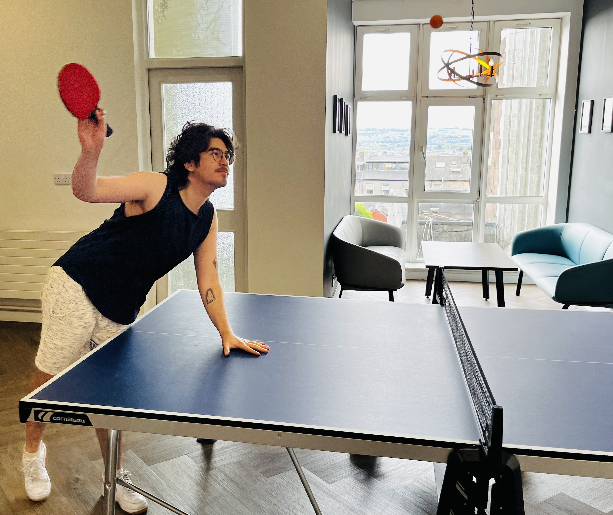

Table Tennis Rules
Table tennis, also known as ping-pong, is governed by the rules established by the International Table Tennis Federation (ITTF). Here is a summary of the key rules:
Basic Rules
Equipment
Table: The table is 2.74 meters long, 1.525 meters wide, and 76 cm high.
Net: The net is 15.25 cm high and runs across the middle of the table.
Ball: The ball is 40 mm in diameter and weighs 2.7 grams.
Racket: The racket can be of any size, shape, or weight but must have a flat surface covered with rubber on one or both sides.
Serving
The ball must be placed on the open palm of the server’s free hand.
The ball must be tossed up at least 16 cm (6 inches) and struck so it first bounces on the server’s side of the table, then bounces over or around the net, and lands on the receiver’s side.
Each player gets two serves in a row, except during deuce (10-10), where players alternate serves after each point.
Order of Play in Doubles
The ball must be served diagonally from the right-hand half of the server's court to the right-hand half of the receiver's court.
Partners must alternate hits. If Player A serves, Player C (from the opposing team) returns, then Player B (partner of Player A) hits next, followed by Player D, and so on.

Returning
The ball must be struck so that it bounces once on the opponent’s side of the table.
A point is won if the opponent fails to make a legal return.
Let
A serve is a let if the ball touches the net but still lands in the correct service box. The serve is retaken without penalty.
A let also occurs if the receiver isn’t ready, provided they do not attempt to return the serve.
Scoring
A match is usually played as best of any odd number of games (e.g., best of 5, 7).
A game is won by the first player or pair to reach 11 points with at least a 2-point lead.
If both players/teams reach 10 points, play continues until one player/team gains a 2-point lead.
Match Conduct
Starting a Match
The choice of who serves first and which side of the table each player starts on is determined by a coin toss or other random method. The game starts by throwing the first ball with the hand, and the winner of this initial point begins serving.
Players switch sides after each game and in the final possible game, when one player or team reaches 5 points.
Legal Points
A point is scored by the opponent if a player fails to make a legal serve or return.
A point is also scored if the ball bounces twice on the opponent's side, if the opponent strikes the ball before it bounces on their side, or if the ball touches anything other than the net assembly before landing on the opponent’s side.
Illegal Actions
Players cannot use their free hand to touch the table during a point.
Players cannot strike the ball twice in succession.
Miscellaneous
Time Limits
The expedite system is introduced if a game is unfinished after 10 minutes of play unless both players have scored at least 9 points. Under this system, players serve alternately, and if the receiver returns the ball 13 times, the server loses the point.
Obstructions
A player cannot obstruct the ball, meaning they cannot touch it when it is above or traveling towards the playing surface, and has not yet passed beyond the end line of the table.